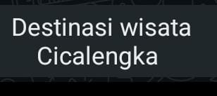

Wisata Kuliner dan UMKM Cicalengka: Rekomendasi Tempat Makan, Nongkrong, dan Destinasi Lokal

Kecamatan Cicalengka merupakan salah satu kawasan di Bandung Timur yang memiliki potensi wisata alam, kuliner, dan usaha mikro kecil menengah (UMKM). Wilayah yang berada di Kabupaten Bandung ini tidak hanya dikenal sebagai kawasan permukiman dan jalur transportasi, tetapi juga mempunyai sejumlah destinasi menarik untuk dikunjungi.
Mulai dari wisata air terjun Curug Cinulang, perbukitan di kawasan Tenjolaya, pusat aktivitas masyarakat di Alun-Alun Cicalengka, hingga kafe alam dan tempat makan lokal. Beragam pilihan tersebut membuat Cicalengka menarik untuk dikunjungi saat akhir pekan maupun ketika sedang melintasi wilayah Bandung Timur.
Selain destinasi wisata, potensi ekonomi lokal juga terlihat dari keberadaan pasar, pedagang makanan, usaha kuliner, dan produk desa wisata. Berikut beberapa tempat dan potensi lokal Cicalengka yang bisa menjadi referensi perjalanan sekaligus mengenal usaha masyarakat setempat.
Butuh Layanan Pengiriman dari Cicalengka dan Rancaekek?
Punya usaha kuliner, toko online, atau UMKM yang membutuhkan layanan pengiriman paket? Lion Parcel Bandung POS101 Nanjungmekar siap membantu kebutuhan pengiriman Anda.
💬 Chat WhatsApp 0851-8309-04861. Curug Cinulang, Destinasi Wisata Alam yang Terkenal di Cicalengka

Salah satu destinasi yang paling dikenal di kawasan Cicalengka adalah Curug Cinulang. Air terjun ini mempunyai daya tarik berupa dua aliran air yang berdampingan dengan suasana alam yang masih hijau dan udara yang relatif sejuk.
Curug Cinulang berada di kawasan Desa Tanjungwangi, dekat perbatasan Kabupaten Bandung dan Kabupaten Sumedang. Lokasinya sering menjadi tujuan wisata masyarakat Bandung Timur maupun pengunjung dari luar daerah.
Pengunjung dapat menikmati pemandangan air terjun, mengambil foto, dan merasakan suasana alam. Kawasan ini juga cocok untuk wisata keluarga maupun perjalanan bersama teman.
Sebelum berkunjung, sebaiknya perhatikan kondisi cuaca dan jalur menuju air terjun. Jalan dan anak tangga di sekitar kawasan wisata dapat menjadi licin ketika hujan.
Lokasi: Kawasan Tanjungwangi, perbatasan Cicalengka dan Sindulang, Kabupaten Sumedang.
Lihat lokasi Curug Cinulang di Google Maps
2. Bukit Keroncong atau Pasir Candi, Menikmati Pemandangan dari Ketinggian

Bagi pengunjung yang menyukai suasana perbukitan, Bukit Keroncong atau Pasir Candi di kawasan Tenjolaya dapat menjadi pilihan menarik. Tempat ini dikenal dengan pemandangan alam terbuka yang memperlihatkan kawasan perbukitan dan lingkungan sekitar Cicalengka.
Kawasan tersebut sering dimanfaatkan masyarakat untuk berjalan santai, berolahraga, bersepeda, maupun menikmati pemandangan dari ketinggian.
Pada waktu tertentu, terutama akhir pekan, kawasan perbukitan ini juga dikenal sebagai tempat aktivitas warga dan pasar kaget. Pengunjung berkesempatan menemukan jajanan serta pedagang kecil di sekitar area yang ramai.
Karena karakter tempatnya berupa kawasan perbukitan, pengunjung sebaiknya menggunakan alas kaki yang nyaman dan tetap memperhatikan kondisi jalur serta kebersihan lingkungan.
Lokasi: Tenjolaya, Kecamatan Cicalengka, Kabupaten Bandung.
Lihat lokasi Bukit Keroncong di Google Maps
3. Alun-Alun Cicalengka, Pusat Aktivitas dan Jajanan Masyarakat

Alun-Alun Cicalengka merupakan salah satu ruang publik yang menjadi tempat berkumpul masyarakat. Lokasinya berada di kawasan pusat aktivitas Kecamatan Cicalengka sehingga cukup mudah dijangkau oleh warga maupun pengunjung dari luar daerah.
Selain digunakan untuk bersantai dan melakukan aktivitas olahraga ringan, kawasan alun-alun juga dikenal dengan keberadaan pedagang kaki lima yang menawarkan berbagai jenis makanan dan minuman.
Pengunjung dapat menemukan jajanan ringan, makanan siap santap, serta minuman yang cocok dinikmati ketika sore atau malam hari.
Keberadaan pedagang tersebut menunjukkan bahwa ruang publik tidak hanya berfungsi sebagai tempat rekreasi, tetapi juga menjadi salah satu ruang aktivitas ekonomi masyarakat kecil.
Lokasi: Jalan Cikopo, Cicalengka Kulon, Kecamatan Cicalengka, Kabupaten Bandung.
Lihat lokasi Alun-Alun Cicalengka di Google Maps
4. Desa Wisata Nagrog, Potensi Produk Lokal dan UMKM Cicalengka

Salah satu potensi menarik di Cicalengka adalah Desa Wisata Nagrog. Kawasan ini tercatat dalam platform Jejaring Desa Wisata (Jadesta) milik Kementerian Pariwisata Republik Indonesia.
Informasi produk wisata yang tercantum pada platform tersebut memperlihatkan adanya sejumlah produk lokal yang dapat menjadi daya tarik ekonomi desa.
Beberapa produk yang tercatat antara lain:
- Anggur: Produk buah yang menjadi salah satu potensi lokal desa.
- Ikan nila: Produk perikanan yang dapat dikembangkan sebagai bahan pangan maupun usaha masyarakat.
- Awug singkong: Salah satu produk makanan tradisional berbahan dasar singkong.
Potensi tersebut memperlihatkan bahwa kegiatan ekonomi desa tidak hanya bergantung pada perdagangan kebutuhan sehari-hari, tetapi juga dapat berkembang melalui produk pertanian, perikanan, dan makanan tradisional.
Produk seperti makanan olahan dan hasil pertanian mempunyai peluang untuk dipasarkan lebih luas apabila didukung kemasan yang baik, pemasaran digital, serta jaringan distribusi yang memadai.
Informasi lebih lanjut mengenai produk Desa Wisata Nagrog dapat dilihat melalui portal resmi: Jadesta Kementerian Pariwisata.
5. Senandung Sore, Kafe Alam dengan Suasana Sawah dan Sungai

Cicalengka juga mempunyai pilihan tempat nongkrong dengan konsep yang berbeda dari kafe perkotaan. Salah satunya adalah Senandung Sore Cafe & Nature yang berada di kawasan Dampit.
Kafe ini dikenal melalui konsep wisata alam yang memungkinkan pengunjung menikmati suasana persawahan, aliran sungai, dan lingkungan hijau.
Menariknya, tempat ini berawal dari keinginan pemiliknya untuk menjaga lahan agar tidak berubah menjadi tempat pembuangan sampah. Area yang awalnya digunakan sebagai tempat bersantai keluarga kemudian dikembangkan menjadi sebuah kafe alam.
Kisah perkembangan usaha tersebut pernah diberitakan oleh Radio Republik Indonesia (RRI) pada Januari 2025.
Senandung Sore menjadi contoh bahwa usaha kuliner lokal dapat dikembangkan dengan menggabungkan kegiatan bisnis, pengalaman wisata, dan kepedulian terhadap lingkungan.
Lokasi: Jalan Raya Curug Cinulang, kawasan Dampit, Kecamatan Cicalengka, Kabupaten Bandung.
Cari Senandung Sore di Google Maps
Baca liputan Senandung Sore oleh RRI
6. Meracik Coffee & Eatery, Tempat Nongkrong dengan Pemandangan Persawahan

Pilihan tempat nongkrong lainnya adalah Meracik Coffee & Eatery yang berada di kawasan Jalan Raya Cicalengka–Majalaya.
Tempat ini dikenal sebagai kafe dengan konsep yang memadukan suasana modern dan pemandangan alam. Salah satu daya tariknya adalah latar persawahan yang memberikan suasana berbeda dibandingkan tempat nongkrong di pusat kota.
Kafe seperti ini menjadi bagian dari perkembangan usaha makanan dan minuman di Cicalengka. Selain menawarkan produk kopi dan makanan, konsep tempat yang nyaman juga menjadi nilai tambah untuk menarik pengunjung.
Bagi masyarakat yang ingin bertemu teman, bekerja sambil menikmati kopi, atau sekadar mencari tempat bersantai, Meracik Coffee & Eatery dapat dimasukkan dalam daftar pilihan.
Lokasi: Jalan Raya Cicalengka–Majalaya, kawasan Cikuya, Kecamatan Cicalengka, Kabupaten Bandung.
Cari Meracik Coffee & Eatery di Google Maps
7. Rekomendasi Kuliner Lokal Cicalengka yang Bisa Dicoba

Selain destinasi wisata alam dan kafe, Cicalengka juga memiliki beragam pilihan tempat makan yang menarik untuk dijelajahi. Mulai dari makanan tradisional hingga kuliner modern, pilihan tersebut dapat menjadi bagian dari pengalaman wisata di Bandung Timur.
Kupat Tahu Cicalengka
Bagi pencinta makanan tradisional, kupat tahu merupakan salah satu pilihan kuliner yang bisa ditemukan di kawasan Nagrog. Hidangan ini terdiri dari ketupat, tahu, dan saus kacang yang biasanya disajikan bersama pelengkap lainnya.
Kuliner seperti ini cocok dijadikan pilihan sarapan atau santapan pagi sebelum melanjutkan perjalanan.
Cari Kupat Tahu Cicalengka di Google Maps
Seafood Teh Risa
Untuk penggemar makanan laut, Seafood Teh Risa di kawasan Jalan Raya Barat Cicalengka dapat menjadi salah satu alternatif. Tempat makan ini dikenal dengan pilihan hidangan seafood dan paket makanan yang cocok dinikmati bersama keluarga maupun teman.
Cari Seafood Teh Risa di Google Maps
Rumah Dimsum Vaza Pacinan
Pilihan berikutnya adalah Rumah Dimsum Vaza Pacinan di kawasan Jalan Raya Cicalengka Timur. Tempat ini menawarkan pilihan dimsum dan makanan ringan yang dapat menjadi alternatif bagi pengunjung yang ingin menikmati kuliner modern.
Cari Rumah Dimsum Vaza di Google Maps
Saung Coklat
Bagi yang menyukai masakan khas Sunda, Saung Coklat di kawasan Cicalengka Wetan juga dapat menjadi pilihan. Rumah makan dengan konsep santai ini menjadi salah satu alternatif tempat makan bersama keluarga.
Cari Saung Coklat di Google Maps
Informasi menu, harga, dan jam operasional setiap tempat makan dapat berubah. Sebaiknya periksa informasi terbaru melalui pengelola atau Google Maps sebelum berkunjung.
8. Pasar Siupi, Aktivitas Perdagangan dan UMKM Masyarakat Cicalengka

Selain tempat wisata dan kuliner, aktivitas ekonomi masyarakat Cicalengka juga dapat dilihat melalui keberadaan pasar tradisional dan pusat perdagangan lokal.
Salah satu tempat yang dikenal masyarakat adalah Pasar Siupi atau Centra UMKM Siupi di kawasan Cicalengka Kulon.
Kawasan pasar mempunyai peran penting dalam mendukung kegiatan ekonomi masyarakat, mulai dari pedagang bahan kebutuhan sehari-hari hingga pelaku usaha kecil yang menjual berbagai produk.
Pasar dan pusat perdagangan lokal juga mempunyai hubungan erat dengan kebutuhan distribusi barang. Produk makanan, pakaian, kebutuhan rumah tangga, dan barang dagangan lainnya membutuhkan jaringan pengiriman untuk menjangkau konsumen di luar wilayah Cicalengka.
Dengan berkembangnya pemasaran melalui media sosial dan marketplace, peluang pelaku UMKM untuk memperluas jangkauan penjualan juga semakin terbuka.
Cari Pasar Siupi Cicalengka di Google Maps
9. Potensi UMKM Cicalengka dan Peluang Pemasaran Produk Lokal
Keberadaan destinasi wisata, tempat makan, pasar, dan desa wisata menunjukkan bahwa Cicalengka mempunyai potensi ekonomi lokal yang cukup beragam.
Pelaku usaha tidak hanya bergerak dalam bidang perdagangan, tetapi juga mencakup usaha makanan dan minuman, produk pertanian, hasil perikanan, serta makanan tradisional.
Beberapa potensi yang dapat dikembangkan antara lain:
- Produk makanan tradisional: Seperti awug singkong dan berbagai makanan khas Sunda.
- Produk pertanian: Hasil perkebunan dan buah-buahan yang dapat dipasarkan secara langsung maupun online.
- Produk perikanan: Hasil budidaya ikan yang mempunyai peluang untuk dipasarkan ke konsumen lebih luas.
- Usaha kuliner: Warung makan, kafe, katering, dan usaha makanan rumahan.
- Perdagangan online: Pelaku usaha yang memanfaatkan marketplace dan media sosial untuk mendapatkan pelanggan dari berbagai daerah.
Salah satu tantangan yang dihadapi pelaku UMKM ketika memperluas pasar adalah bagaimana mengirimkan produk kepada pelanggan dengan aman dan tepat waktu.
Karena itu, keberadaan jasa pengiriman barang dan paket menjadi bagian penting dalam mendukung perkembangan perdagangan lokal.
📍 Lokasi Lion Parcel Bandung POS101 Nanjungmekar
Jl. Raya Barat Cicalengka RT 1 RW 1, Nanjung Mekar, Rancaekek, Kabupaten Bandung, Jawa Barat.
10. Layanan Pengiriman Paket untuk Mendukung UMKM Cicalengka dan Rancaekek
Perkembangan usaha kecil dan menengah membutuhkan dukungan berbagai sektor, termasuk layanan logistik. Ketika produk mulai dipasarkan ke luar daerah, pelaku usaha membutuhkan jasa pengiriman untuk menjangkau pelanggan di berbagai kota.
Hal ini berlaku bagi penjual makanan kering, pakaian, aksesori, produk kerajinan, hingga berbagai barang dagangan lainnya.
Bagi pelaku UMKM di Cicalengka, Rancaekek, dan wilayah Bandung Timur, memilih layanan pengiriman yang sesuai dengan karakter barang dan tujuan menjadi salah satu bagian penting dalam kegiatan usaha.
Lion Parcel Bandung POS101 Nanjungmekar Rancaekek hadir sebagai salah satu pilihan layanan pengiriman bagi masyarakat, pelaku usaha, dan penjual online di sekitar wilayah tersebut.
Pelaku usaha yang ingin mengetahui informasi pengiriman paket dapat menghubungi agen untuk berkonsultasi mengenai layanan dan tujuan pengiriman.
UMKM Cicalengka Ingin Mengirim Produk ke Luar Kota?
Hubungi Lion Parcel Bandung POS101 untuk bertanya mengenai kebutuhan pengiriman paket, barang dagangan, maupun produk usaha Anda.
💬 Konsultasi Pengiriman via WhatsAppKesimpulan
Cicalengka mempunyai potensi wisata dan ekonomi lokal yang menarik untuk dikembangkan. Mulai dari Curug Cinulang, Bukit Keroncong, Alun-Alun Cicalengka, Desa Wisata Nagrog, hingga berbagai tempat makan dan kafe alam yang menawarkan pengalaman berbeda.
Keberadaan pasar, usaha kuliner, produk pertanian, dan berbagai UMKM juga menjadi bagian penting dari kehidupan ekonomi masyarakat setempat. Potensi tersebut dapat semakin berkembang melalui promosi digital, peningkatan kualitas produk, serta dukungan distribusi dan layanan pengiriman.
Bagi masyarakat yang ingin menjelajahi Bandung Timur, Cicalengka bisa menjadi salah satu tujuan menarik untuk menikmati wisata alam sekaligus mengenal kuliner dan aktivitas ekonomi masyarakat lokal.
Nama Agen: Lion Parcel Bandung POS101 Nanjungmekar Rancaekek
Jam Operasional: Senin–Minggu, 08.00–20.00 WIB
Alamat: Jl. Raya Barat Cicalengka RT 1 RW 1, Nanjung Mekar, Rancaekek, Kabupaten Bandung
WhatsApp: 0851-8309-0486
Sumber Referensi dan Informasi
- Kementerian Pariwisata - Produk Wisata Desa Wisata Nagrog Cicalengka
- Dinas Pariwisata dan Ekonomi Kreatif Kabupaten Bandung - Cafe Senandung Sore
- RRI - Senandung Sore, Sebuah Cafe Alam di Cicalengka
- BPS Kabupaten Bandung - Kecamatan Cicalengka Dalam Angka
Informasi destinasi dan usaha lokal disusun dari sumber publik serta direktori usaha. Ketersediaan fasilitas, harga, alamat, dan jam operasional dapat berubah. Pengunjung disarankan melakukan pengecekan sebelum perjalanan.